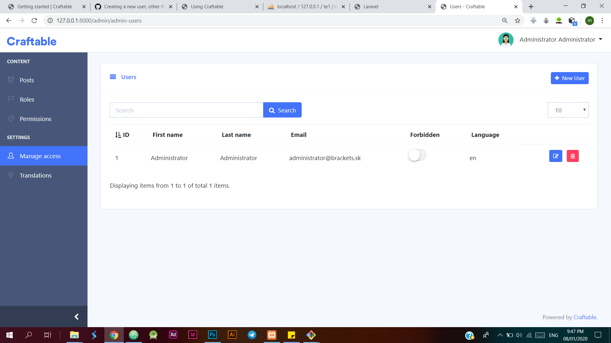
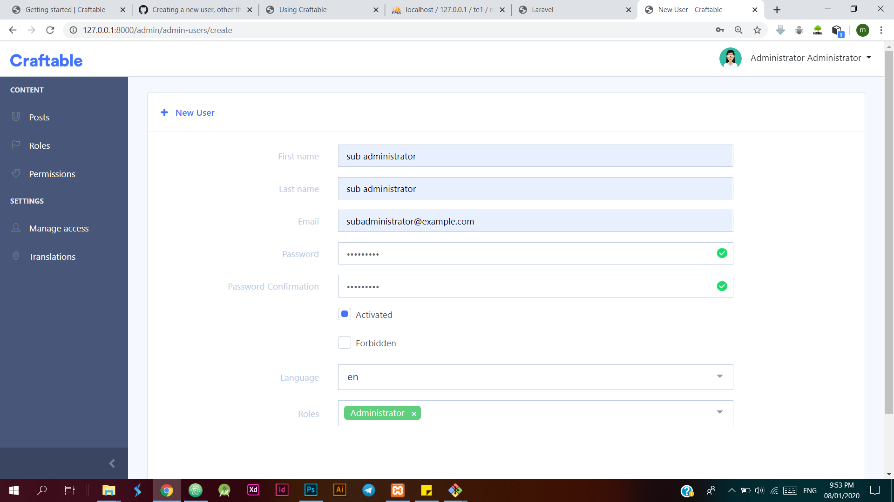
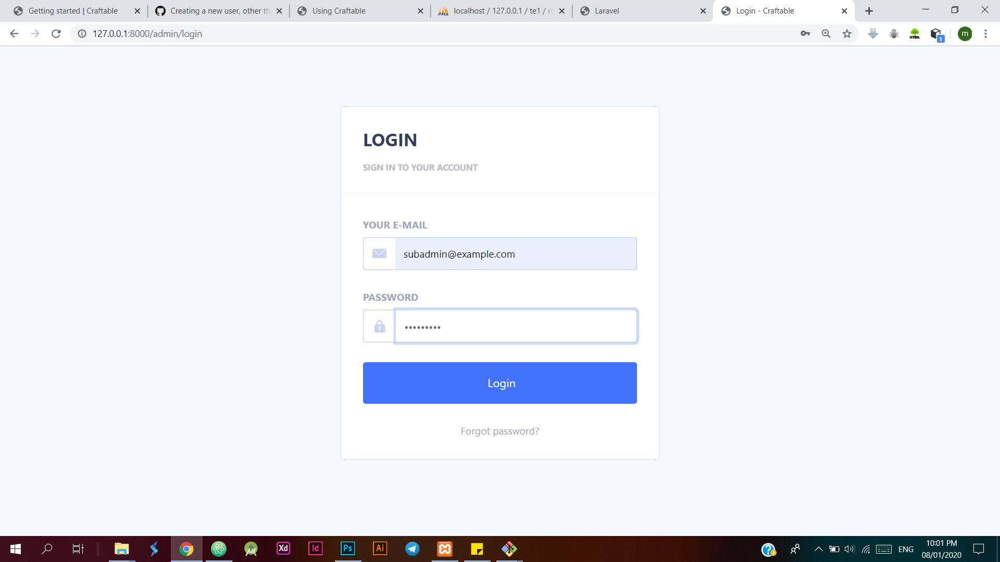
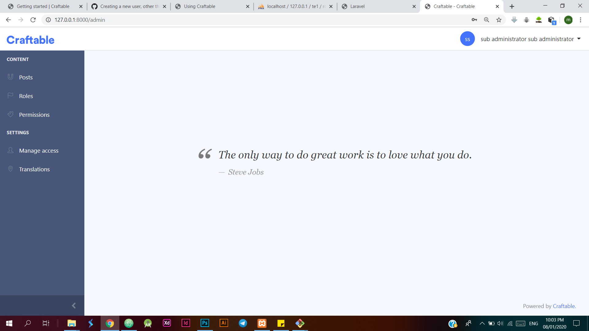

How to create a new administrator in addition to the default admin created by the craftable team
Select Manage access under the SETTINGS and create a new user
Creating new administrator (for my example i will use sub administrator and it will have a role as administrator
Creating a new admin user (note: when creating the password it is a mix of both lower and uppercase) since i tried with all lowercase it did not work out for me
Logout from the current user account
login into the admin panel with the newly created admin user
Logged In admin user
I hope it helped